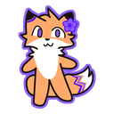
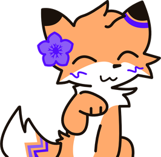
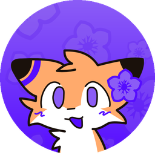

Лисья мастерская
Сервер каталога: новые версии переводов по вашим играм, форум для ошибок и помощь с установкой. Можно и просто поболтать.

Зайдите по кнопке выше — регистрация в Discord бесплатная.
В #роли отметьте свои игры — упоминания будут только о них.
Вышла новая версия — придёт уведомление. Больше ничего делать не нужно.
#новые-переводыОбъявления о выходе перевода или новой версии — с упоминанием роли игры.
#нашёл-ошибкуФорум: непереведённая строка, опечатка, кривая надпись. Со скриншотом — исправим в следующей версии.
#тикетыНе ставится или вылетает — откройте тикет, разберёмся лично.
#ролиОтметьте свои игры — упоминания о новых версиях будут приходить только о них, остальное не побеспокоит.

ИИ-помощник мастерской отвечает быстро, даже ночью. Владелец читает всё и при необходимости отвечает сам.